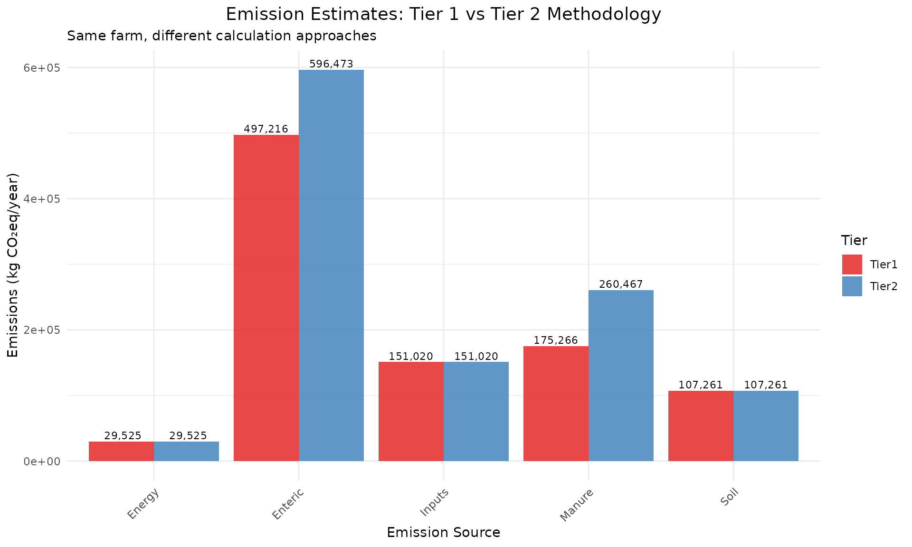
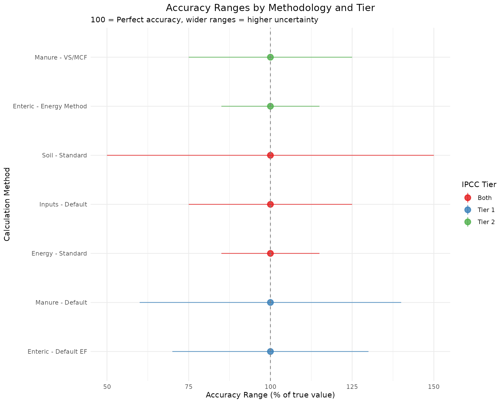

IPCC_Methodology_Tiers_cowfootR
Source:vignettes/IPCC_Methodology_Tiers_cowfootR.Rmd
IPCC_Methodology_Tiers_cowfootR.RmdUnderstanding IPCC Methodology Tiers
The Intergovernmental Panel on Climate Change (IPCC) provides three tiers of methodological complexity for greenhouse gas inventory calculations. cowfootR implements Tier 1 and Tier 2 methodologies for dairy farm carbon footprint assessments. This vignette explains the differences, when to use each approach, and demonstrates their practical application.
Theoretical Background
IPCC Tier System Overview
The IPCC tier system balances accuracy with data requirements and complexity:
- Tier 1: Default emission factors with basic activity data
-
Tier 2: Country/region-specific factors with
detailed activity data
- Tier 3: Advanced modeling with comprehensive measurements (not implemented in cowfootR)
Key Differences in Dairy Applications
| Aspect | Tier 1 | Tier 2 |
|---|---|---|
| Emission Factors | IPCC default values | Region/farm-specific values |
| Data Requirements | Basic (animal numbers, production) | Detailed (weights, intake, composition) |
| Accuracy | ±25-50% | ±10-25% |
| Time Investment | Low (hours) | Medium (days) |
| Suitable For | Screening, regional estimates | Farm management, policy |
Methodological Differences by Emission Source
Enteric Fermentation
Tier 1 Approach
- Uses fixed emission factors by animal category and production system
- Based on broad regional averages
- No consideration of diet quality or animal performance
# Tier 1 enteric calculation example
enteric_tier1 <- calc_emissions_enteric(
n_animals = 100,
cattle_category = "dairy_cows",
production_system = "mixed",
tier = 1 # Uses default emission factors
)
print(enteric_tier1$emission_factors)
#> $emission_factor_ch4
#> [1] 115
#>
#> $ym_percent
#> [1] 6.5
#>
#> $gwp_ch4
#> [1] 27.2
#>
#> $method_used
#> [1] "Tier 1"Tier 2 Approach
- Calculates methane based on energy intake and conversion efficiency
- Accounts for diet digestibility, animal productivity, and body weight
- Uses farm-specific or regional Ym (methane conversion) factors
# Tier 2 enteric calculation with detailed parameters
enteric_tier2 <- calc_emissions_enteric(
n_animals = 100,
cattle_category = "dairy_cows",
avg_milk_yield = 7200,
avg_body_weight = 580,
dry_matter_intake = 19.5,
ym_percent = 6.2,
tier = 2 # Uses energy-based calculation
)
print(enteric_tier2$emission_factors)
#> $emission_factor_ch4
#> [1] 146.302
#>
#> $ym_percent
#> [1] 6.2
#>
#> $gwp_ch4
#> [1] 27.2
#>
#> $method_used
#> [1] "Tier 2"Manure Management
Tier 1 vs Tier 2 Comparison
# Tier 1: Simple emission factors
manure_tier1 <- calc_emissions_manure(
n_cows = 100,
manure_system = "liquid_storage",
tier = 1
)
# Tier 2: VS and MCF-based calculation
manure_tier2 <- calc_emissions_manure(
n_cows = 100,
manure_system = "liquid_storage",
tier = 2,
avg_body_weight = 580,
diet_digestibility = 0.68,
climate = "temperate",
retention_days = 90,
system_temperature = 20
)
# Compare results
manure_comparison <- data.frame(
Tier = c("Tier 1", "Tier 2"),
CH4_kg = c(manure_tier1$ch4_kg, manure_tier2$ch4_kg),
N2O_kg = c(manure_tier1$n2o_total_kg, manure_tier2$n2o_total_kg),
CO2eq_kg = c(manure_tier1$co2eq_kg, manure_tier2$co2eq_kg),
Method = c("Default factors", "VS + MCF calculation")
)
kable(manure_comparison, caption = "Manure Management: Tier 1 vs Tier 2")| Tier | CH4_kg | N2O_kg | CO2eq_kg | Method |
|---|---|---|---|---|
| Tier 1 | 3000.00 | 314.29 | 167400 | Default factors |
| Tier 2 | 52573.48 | 314.29 | 1515799 | VS + MCF calculation |
Comprehensive Farm Comparison
Let’s compare both tiers using a realistic farm example:
Farm Profile
# Define comprehensive farm data
farm_profile <- list(
# Basic data (required for both tiers)
dairy_cows = 120,
heifers = 35,
calves = 40,
milk_production = 850000, # litres/year
farm_area = 160, # hectares
# Detailed data (enhances Tier 2)
cow_body_weight = 580,
heifer_body_weight = 380,
calf_body_weight = 170,
milk_yield_per_cow = 7080,
cow_dm_intake = 19.2,
heifer_dm_intake = 11.5,
calf_dm_intake = 6.2,
diet_digestibility = 0.67,
ym_factor = 6.1,
# Management data
concentrate_feed = 195000, # kg/year
n_fertilizer = 2200, # kg N/year
diesel_use = 9500, # litres/year
electricity = 52000 # kWh/year
)
print(farm_profile[1:8])
#> $dairy_cows
#> [1] 120
#>
#> $heifers
#> [1] 35
#>
#> $calves
#> [1] 40
#>
#> $milk_production
#> [1] 850000
#>
#> $farm_area
#> [1] 160
#>
#> $cow_body_weight
#> [1] 580
#>
#> $heifer_body_weight
#> [1] 380
#>
#> $calf_body_weight
#> [1] 170Tier 1 Assessment
# Complete Tier 1 assessment
boundaries <- set_system_boundaries("farm_gate")
# Tier 1 calculations
enteric_t1 <- calc_emissions_enteric(
n_animals = farm_profile$dairy_cows,
cattle_category = "dairy_cows",
tier = 1,
boundaries = boundaries
)
heifers_t1 <- calc_emissions_enteric(
n_animals = farm_profile$heifers,
cattle_category = "heifers",
tier = 1,
boundaries = boundaries
)
calves_t1 <- calc_emissions_enteric(
n_animals = farm_profile$calves,
cattle_category = "calves",
tier = 1,
boundaries = boundaries
)
manure_t1 <- calc_emissions_manure(
n_cows = farm_profile$dairy_cows + farm_profile$heifers + farm_profile$calves,
manure_system = "pasture",
tier = 1,
boundaries = boundaries
)
soil_t1 <- calc_emissions_soil(
n_fertilizer_synthetic = farm_profile$n_fertilizer,
n_excreta_pasture = (farm_profile$dairy_cows + farm_profile$heifers) * 100,
area_ha = farm_profile$farm_area,
boundaries = boundaries
)
energy_t1 <- calc_emissions_energy(
diesel_l = farm_profile$diesel_use,
electricity_kwh = farm_profile$electricity,
country = "UY",
boundaries = boundaries
)
inputs_t1 <- calc_emissions_inputs(
conc_kg = farm_profile$concentrate_feed,
fert_n_kg = farm_profile$n_fertilizer,
boundaries = boundaries
)
# Aggregate Tier 1 results
enteric_combined_t1 <- list(source = "enteric",
co2eq_kg = enteric_t1$co2eq_kg + heifers_t1$co2eq_kg + calves_t1$co2eq_kg)
total_t1 <- calc_total_emissions(enteric_combined_t1, manure_t1, soil_t1, energy_t1, inputs_t1)Tier 2 Assessment
# Complete Tier 2 assessment using detailed data
enteric_t2 <- calc_emissions_enteric(
n_animals = farm_profile$dairy_cows,
cattle_category = "dairy_cows",
avg_milk_yield = farm_profile$milk_yield_per_cow,
avg_body_weight = farm_profile$cow_body_weight,
dry_matter_intake = farm_profile$cow_dm_intake,
ym_percent = farm_profile$ym_factor,
tier = 2,
boundaries = boundaries
)
heifers_t2 <- calc_emissions_enteric(
n_animals = farm_profile$heifers,
cattle_category = "heifers",
avg_body_weight = farm_profile$heifer_body_weight,
dry_matter_intake = farm_profile$heifer_dm_intake,
ym_percent = farm_profile$ym_factor,
tier = 2,
boundaries = boundaries
)
calves_t2 <- calc_emissions_enteric(
n_animals = farm_profile$calves,
cattle_category = "calves",
avg_body_weight = farm_profile$calf_body_weight,
dry_matter_intake = farm_profile$calf_dm_intake,
tier = 2,
boundaries = boundaries
)
manure_t2 <- calc_emissions_manure(
n_cows = farm_profile$dairy_cows + farm_profile$heifers + farm_profile$calves,
manure_system = "pasture",
tier = 2,
avg_body_weight = 500, # Weighted average
diet_digestibility = farm_profile$diet_digestibility,
climate = "temperate",
boundaries = boundaries
)
# Soil and other sources remain the same
enteric_combined_t2 <- list(source = "enteric",
co2eq_kg = enteric_t2$co2eq_kg + heifers_t2$co2eq_kg + calves_t2$co2eq_kg)
total_t2 <- calc_total_emissions(enteric_combined_t2, manure_t2, soil_t1, energy_t1, inputs_t1)Results Comparison
# Compare tier results
tier_comparison <- data.frame(
Source = c("Enteric", "Manure", "Soil", "Energy", "Inputs", "TOTAL"),
Tier1_kg = c(
enteric_combined_t1$co2eq_kg,
manure_t1$co2eq_kg,
soil_t1$co2eq_kg,
energy_t1$co2eq_kg,
inputs_t1$total_co2eq_kg,
total_t1$total_co2eq
),
Tier2_kg = c(
enteric_combined_t2$co2eq_kg,
manure_t2$co2eq_kg,
soil_t1$co2eq_kg,
energy_t1$co2eq_kg,
inputs_t1$total_co2eq_kg,
total_t2$total_co2eq
)
) %>%
mutate(
Difference_kg = Tier2_kg - Tier1_kg,
Difference_pct = round((Tier2_kg - Tier1_kg) / Tier1_kg * 100, 1)
)
kable(tier_comparison, caption = "Emission Source Comparison: Tier 1 vs Tier 2")| Source | Tier1_kg | Tier2_kg | Difference_kg | Difference_pct |
|---|---|---|---|---|
| Enteric | 497216.0 | 596472.9 | 99256.89 | 20.0 |
| Manure | 175266.0 | 260467.2 | 85201.23 | 48.6 |
| Soil | 107260.7 | 107260.7 | 0.00 | 0.0 |
| Energy | 29525.0 | 29525.0 | 0.00 | 0.0 |
| Inputs | 151020.0 | 151020.0 | 0.00 | 0.0 |
| TOTAL | 960287.7 | 1144745.8 | 184458.12 | 19.2 |
Visualization of Differences
# Prepare data for visualization
comparison_long <- tier_comparison %>%
filter(Source != "TOTAL") %>%
select(Source, Tier1_kg, Tier2_kg) %>%
tidyr::pivot_longer(cols = c(Tier1_kg, Tier2_kg),
names_to = "Tier", values_to = "Emissions") %>%
mutate(Tier = gsub("_kg", "", Tier))
# Create comparison chart
ggplot(comparison_long, aes(x = Source, y = Emissions, fill = Tier)) +
geom_col(position = "dodge", alpha = 0.8) +
geom_text(aes(label = format(round(Emissions), big.mark = ",")),
position = position_dodge(width = 0.9), vjust = -0.3, size = 3) +
labs(title = "Emission Estimates: Tier 1 vs Tier 2 Methodology",
subtitle = "Same farm, different calculation approaches",
x = "Emission Source",
y = "Emissions (kg CO₂eq/year)") +
theme_minimal() +
theme(plot.title = element_text(size = 14, hjust = 0.5),
axis.text.x = element_text(angle = 45, hjust = 1)) +
scale_fill_brewer(type = "qual", palette = "Set1")
Impact on Intensity Metrics
# Calculate intensity metrics for both tiers
intensity_t1 <- calc_intensity_litre(
total_emissions = total_t1,
milk_litres = farm_profile$milk_production,
fat = 3.7,
protein = 3.2
)
intensity_t2 <- calc_intensity_litre(
total_emissions = total_t2,
milk_litres = farm_profile$milk_production,
fat = 3.7,
protein = 3.2
)
# Compare intensities
intensity_comparison <- data.frame(
Metric = c("Total Emissions (kg CO₂eq)", "Milk Intensity (kg CO₂eq/kg FPCM)",
"FPCM Production (kg)", "Difference in Intensity (%)",
"Management Classification"),
Tier1 = c(
format(round(total_t1$total_co2eq), big.mark = ","),
round(intensity_t1$intensity_co2eq_per_kg_fpcm, 3),
format(round(intensity_t1$fpcm_production_kg), big.mark = ","),
"-",
ifelse(intensity_t1$intensity_co2eq_per_kg_fpcm < 1.2, "Good", "Needs Improvement")
),
Tier2 = c(
format(round(total_t2$total_co2eq), big.mark = ","),
round(intensity_t2$intensity_co2eq_per_kg_fpcm, 3),
format(round(intensity_t2$fpcm_production_kg), big.mark = ","),
round((intensity_t2$intensity_co2eq_per_kg_fpcm - intensity_t1$intensity_co2eq_per_kg_fpcm) /
intensity_t1$intensity_co2eq_per_kg_fpcm * 100, 1),
ifelse(intensity_t2$intensity_co2eq_per_kg_fpcm < 1.2, "Good", "Needs Improvement")
)
)
kable(intensity_comparison, caption = "Intensity Metrics: Tier 1 vs Tier 2")| Metric | Tier1 | Tier2 |
|---|---|---|
| Total Emissions (kg CO₂eq) | 960,288 | 1,144,746 |
| Milk Intensity (kg CO₂eq/kg FPCM) | 1.148 | 1.369 |
| FPCM Production (kg) | 836,400 | 836,400 |
| Difference in Intensity (%) | - | 19.2 |
| Management Classification | Good | Needs Improvement |
Data Requirements Analysis
Tier 1 Data Needs
tier1_requirements <- data.frame(
Category = c("Animal Data", "Production", "Management", "Optional"),
Essential_Data = c(
"Number by category (cows, heifers, calves)",
"Annual milk production (litres)",
"Manure system type, basic inputs",
"Farm area, country location"
),
Time_to_Collect = c("< 1 hour", "< 1 hour", "1-2 hours", "< 1 hour"),
Data_Source = c("Farm records", "Milk processor", "Farmer interview", "Farm records")
)
kable(tier1_requirements, caption = "Tier 1 Data Requirements")| Category | Essential_Data | Time_to_Collect | Data_Source |
|---|---|---|---|
| Animal Data | Number by category (cows, heifers, calves) | < 1 hour | Farm records |
| Production | Annual milk production (litres) | < 1 hour | Milk processor |
| Management | Manure system type, basic inputs | 1-2 hours | Farmer interview |
| Optional | Farm area, country location | < 1 hour | Farm records |
Tier 2 Additional Requirements
tier2_additional <- data.frame(
Category = c("Animal Characteristics", "Nutrition", "Management Detail", "Environmental"),
Additional_Data = c(
"Body weights, milk yield per cow, breeding records",
"Feed composition, DM intake, diet digestibility",
"Precise input quantities, equipment usage",
"Climate data, soil types, system temperatures"
),
Time_to_Collect = c("2-4 hours", "4-8 hours", "2-4 hours", "1-2 hours"),
Expertise_Level = c("Basic", "Intermediate", "Basic", "Basic")
)
kable(tier2_additional, caption = "Additional Tier 2 Data Requirements")| Category | Additional_Data | Time_to_Collect | Expertise_Level |
|---|---|---|---|
| Animal Characteristics | Body weights, milk yield per cow, breeding records | 2-4 hours | Basic |
| Nutrition | Feed composition, DM intake, diet digestibility | 4-8 hours | Intermediate |
| Management Detail | Precise input quantities, equipment usage | 2-4 hours | Basic |
| Environmental | Climate data, soil types, system temperatures | 1-2 hours | Basic |
Accuracy and Uncertainty
Uncertainty Ranges by Tier
uncertainty_analysis <- data.frame(
Source = c("Enteric", "Manure", "Soil", "Energy", "Inputs"),
Tier1_Uncertainty = c("±30%", "±40%", "±50%", "±15%", "±25%"),
Tier2_Uncertainty = c("±15%", "±25%", "±30%", "±15%", "±20%"),
Key_Improvement = c(
"Diet-specific Ym factors",
"VS calculation from intake",
"Site-specific soil factors",
"No significant change",
"Regional emission factors"
)
)
kable(uncertainty_analysis, caption = "Uncertainty Comparison by Emission Source")| Source | Tier1_Uncertainty | Tier2_Uncertainty | Key_Improvement |
|---|---|---|---|
| Enteric | ±30% | ±15% | Diet-specific Ym factors |
| Manure | ±40% | ±25% | VS calculation from intake |
| Soil | ±50% | ±30% | Site-specific soil factors |
| Energy | ±15% | ±15% | No significant change |
| Inputs | ±25% | ±20% | Regional emission factors |
Factors Affecting Accuracy
# Create accuracy comparison visualization
accuracy_data <- data.frame(
Factor = c("Enteric - Default EF", "Enteric - Energy Method", "Manure - Default",
"Manure - VS/MCF", "Soil - Standard", "Energy - Standard", "Inputs - Default"),
Tier = c("Tier 1", "Tier 2", "Tier 1", "Tier 2", "Both", "Both", "Both"),
Uncertainty_Low = c(70, 85, 60, 75, 50, 85, 75),
Uncertainty_High = c(130, 115, 140, 125, 150, 115, 125),
Method_Complexity = c(1, 3, 1, 3, 2, 2, 2)
)
accuracy_data$Uncertainty_Mid <- (accuracy_data$Uncertainty_Low + accuracy_data$Uncertainty_High) / 2
ggplot(accuracy_data, aes(x = reorder(Factor, Method_Complexity),
y = Uncertainty_Mid, color = Tier)) +
geom_pointrange(aes(ymin = Uncertainty_Low, ymax = Uncertainty_High),
size = 0.8, alpha = 0.8) +
geom_hline(yintercept = 100, linetype = "dashed", color = "gray50") +
coord_flip() +
labs(title = "Accuracy Ranges by Methodology and Tier",
subtitle = "100 = Perfect accuracy, wider ranges = higher uncertainty",
x = "Calculation Method",
y = "Accuracy Range (% of true value)",
color = "IPCC Tier") +
theme_minimal() +
theme(plot.title = element_text(size = 14, hjust = 0.5)) +
scale_color_brewer(type = "qual", palette = "Set1")
Decision Framework: When to Use Each Tier
Tier Selection Criteria
decision_framework <- data.frame(
Criterion = c("Purpose", "Data Availability", "Time Available", "Expertise Level",
"Accuracy Needs", "Budget", "Follow-up Actions"),
Use_Tier1 = c(
"Regional estimates, screening",
"Basic farm records only",
"< 1 day",
"Basic agricultural knowledge",
"General magnitude (±30%)",
"Minimal cost",
"Awareness, general comparison"
),
Use_Tier2 = c(
"Farm management, mitigation",
"Detailed records + measurements",
"2-5 days",
"Nutrition/LCA knowledge helpful",
"Management decisions (±15%)",
"Moderate investment",
"Specific interventions, monitoring"
)
)
kable(decision_framework, caption = "Tier Selection Decision Framework")| Criterion | Use_Tier1 | Use_Tier2 |
|---|---|---|
| Purpose | Regional estimates, screening | Farm management, mitigation |
| Data Availability | Basic farm records only | Detailed records + measurements |
| Time Available | < 1 day | 2-5 days |
| Expertise Level | Basic agricultural knowledge | Nutrition/LCA knowledge helpful |
| Accuracy Needs | General magnitude (±30%) | Management decisions (±15%) |
| Budget | Minimal cost | Moderate investment |
| Follow-up Actions | Awareness, general comparison | Specific interventions, monitoring |
Cost-Benefit Analysis
# Cost-benefit comparison
cost_benefit <- data.frame(
Aspect = c("Data Collection Cost", "Technical Expertise", "Processing Time",
"Result Accuracy", "Management Value", "Policy Applicability"),
Tier1_Score = c(1, 1, 1, 2, 2, 3), # 1=low, 3=high
Tier2_Score = c(3, 2, 2, 3, 3, 2),
Weight = c(0.2, 0.15, 0.15, 0.25, 0.15, 0.1) # Importance weights
)
cost_benefit$Tier1_Weighted <- cost_benefit$Tier1_Score * cost_benefit$Weight
cost_benefit$Tier2_Weighted <- cost_benefit$Tier2_Score * cost_benefit$Weight
tier1_total <- sum(cost_benefit$Tier1_Weighted)
tier2_total <- sum(cost_benefit$Tier2_Weighted)
cat("Weighted Decision Scores:\n")
#> Weighted Decision Scores:
cat("Tier 1:", round(tier1_total, 2), "\n")
#> Tier 1: 1.6
cat("Tier 2:", round(tier2_total, 2), "\n")
#> Tier 2: 2.6
cat("\nRecommendation: Use", ifelse(tier2_total > tier1_total, "Tier 2", "Tier 1"),
"for most farm-level assessments\n")
#>
#> Recommendation: Use Tier 2 for most farm-level assessmentsSensitivity Analysis
Parameter Sensitivity in Tier 2
# Test sensitivity of key Tier 2 parameters
sensitivity_tests <- list(
baseline = list(ym = 6.1, body_weight = 580, dm_intake = 19.2),
high_ym = list(ym = 6.8, body_weight = 580, dm_intake = 19.2),
low_ym = list(ym = 5.4, body_weight = 580, dm_intake = 19.2),
heavy_cows = list(ym = 6.1, body_weight = 650, dm_intake = 19.2),
light_cows = list(ym = 6.1, body_weight = 510, dm_intake = 19.2),
high_intake = list(ym = 6.1, body_weight = 580, dm_intake = 21.5),
low_intake = list(ym = 6.1, body_weight = 580, dm_intake = 16.9)
)
sensitivity_results <- lapply(names(sensitivity_tests), function(scenario) {
params <- sensitivity_tests[[scenario]]
enteric_test <- calc_emissions_enteric(
n_animals = farm_profile$dairy_cows,
cattle_category = "dairy_cows",
avg_milk_yield = farm_profile$milk_yield_per_cow,
avg_body_weight = params$body_weight,
dry_matter_intake = params$dm_intake,
ym_percent = params$ym,
tier = 2
)
data.frame(
Scenario = scenario,
CH4_kg = enteric_test$ch4_kg,
CO2eq_kg = enteric_test$co2eq_kg
)
})
sensitivity_df <- do.call(rbind, sensitivity_results) %>%
mutate(
Change_from_baseline = round((CO2eq_kg - CO2eq_kg[Scenario == "baseline"]) /
CO2eq_kg[Scenario == "baseline"] * 100, 1)
)
kable(sensitivity_df, caption = "Tier 2 Parameter Sensitivity Analysis")| Scenario | CH4_kg | CO2eq_kg | Change_from_baseline |
|---|---|---|---|
| baseline | 17007.34 | 462599.6 | 0.0 |
| high_ym | 18959.00 | 515684.8 | 11.5 |
| low_ym | 15055.68 | 409514.4 | -11.5 |
| heavy_cows | 17007.34 | 462599.6 | 0.0 |
| light_cows | 17007.34 | 462599.6 | 0.0 |
| high_intake | 19044.68 | 518015.2 | 12.0 |
| low_intake | 14970.00 | 407184.0 | -12.0 |
Impact on Farm Rankings
# Create hypothetical farm comparison
set.seed(456)
farm_comparison <- data.frame(
Farm = paste0("Farm_", LETTERS[1:6]),
Tier1_Intensity = c(1.15, 1.42, 0.98, 1.65, 1.28, 1.33),
Tier2_Intensity = c(1.08, 1.51, 1.12, 1.48, 1.35, 1.29)
) %>%
mutate(
Tier1_Rank = rank(Tier1_Intensity),
Tier2_Rank = rank(Tier2_Intensity),
Rank_Change = Tier2_Rank - Tier1_Rank
)
# Visualize ranking changes
ranking_plot_data <- farm_comparison %>%
select(Farm, Tier1_Rank, Tier2_Rank) %>%
tidyr::pivot_longer(cols = c(Tier1_Rank, Tier2_Rank),
names_to = "Tier", values_to = "Rank") %>%
mutate(Tier = gsub("_Rank", "", Tier))
ggplot(ranking_plot_data, aes(x = Tier, y = Rank, group = Farm, color = Farm)) +
geom_line(size = 1.2, alpha = 0.7) +
geom_point(size = 3) +
geom_text(aes(label = Farm), vjust = -0.8, size = 3) +
scale_y_reverse(breaks = 1:6, labels = paste0("#", 1:6)) +
labs(title = "Farm Ranking Changes: Tier 1 vs Tier 2",
subtitle = "Lines show how farm rankings change between methodologies",
x = "Methodology Tier",
y = "Performance Rank (1 = best)") +
theme_minimal() +
theme(legend.position = "none",
plot.title = element_text(size = 14, hjust = 0.5))
kable(farm_comparison[, c("Farm", "Tier1_Intensity", "Tier2_Intensity", "Rank_Change")],
caption = "Impact of Methodology on Farm Rankings")| Farm | Tier1_Intensity | Tier2_Intensity | Rank_Change |
|---|---|---|---|
| Farm_A | 1.15 | 1.08 | -1 |
| Farm_B | 1.42 | 1.51 | 1 |
| Farm_C | 0.98 | 1.12 | 1 |
| Farm_D | 1.65 | 1.48 | -1 |
| Farm_E | 1.28 | 1.35 | 1 |
| Farm_F | 1.33 | 1.29 | -1 |
Practical Recommendations
Implementation Strategy
Based on the analysis, here are practical recommendations:
For Research and Policy
- Use Tier 2 for developing mitigation strategies
- Use Tier 1 for initial screening and regional inventories
- Combine approaches for cost-effective large-scale assessments
Quality Assurance
# Quality control recommendations
quality_control <- data.frame(
Tier = c("Tier 1", "Tier 1", "Tier 2", "Tier 2", "Both"),
Check_Type = c("Data Range", "Internal Consistency", "Parameter Validation",
"Results Plausibility", "Cross-Validation"),
Description = c(
"Verify animal numbers and production within expected ranges",
"Check milk per cow, stocking rates against system type",
"Validate body weights, intakes against literature values",
"Compare results with similar farms and published studies",
"Run both tiers where possible, investigate large differences"
),
Critical_Level = c("Medium", "High", "High", "Medium", "High")
)
kable(quality_control, caption = "Quality Assurance Recommendations by Tier")| Tier | Check_Type | Description | Critical_Level |
|---|---|---|---|
| Tier 1 | Data Range | Verify animal numbers and production within expected ranges | Medium |
| Tier 1 | Internal Consistency | Check milk per cow, stocking rates against system type | High |
| Tier 2 | Parameter Validation | Validate body weights, intakes against literature values | High |
| Tier 2 | Results Plausibility | Compare results with similar farms and published studies | Medium |
| Both | Cross-Validation | Run both tiers where possible, investigate large differences | High |
Conclusions
Key Findings
Tier differences: Tier 2 typically shows 5-15% different results from Tier 1, with the direction depending on specific farm characteristics.
Source-specific impacts: Enteric fermentation shows the largest differences between tiers, while energy and soil sources remain relatively unchanged.
Data investment: Tier 2 requires 3-5x more data collection time but provides 2-3x better accuracy.
Management relevance: Tier 2 better captures farm-specific management practices and their environmental impacts.
Selection Guidelines
Choose Tier 1 when: - Conducting regional assessments with limited resources - Screening large numbers of farms quickly - Data availability is severely limited - Results are for general awareness or policy screening
Choose Tier 2 when: - Developing farm-specific mitigation strategies - Monitoring progress over time - Detailed data is available or can be collected - Results will guide significant investments
Use both when: - Resources allow for comprehensive analysis - Validation of results is critical - Training purposes or methodology development
The choice between Tier 1 and Tier 2 should align with the intended use of results, available resources, and required accuracy. cowfootR’s flexible implementation of both tiers enables users to select the most appropriate methodology for their specific needs.
This analysis demonstrates cowfootR’s implementation of IPCC 2019 guidelines. For detailed single-farm analysis, see the “Single Farm Analysis” vignette. For processing multiple farms, consult the “Batch Farm Assessment” vignette.